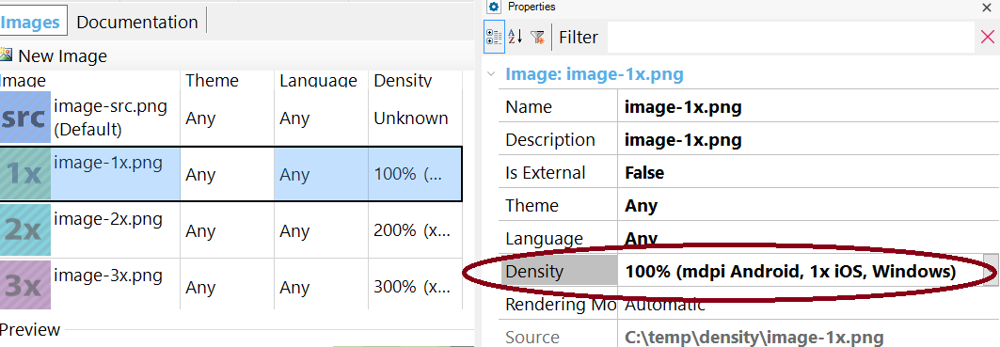

Responsive images are an important part of a Responsive Web Application. Since the entire website should be adaptable for viewing on multiple devices, images must be optimally displayed regardless of the characteristics of the display device used. Images that look great on a standard desktop can look pixelated on a Retina display. However, high-quality images should only be used for high pixel density displays (like Apple’s Retina devices). The extra page load overhead should be avoided for displays that do not support high density. Rendering high-quality images for all devices (independently of their display density) can be a problem on smartphones and other mobile devices with limited bandwidth or processing power. So in general, you want to show a separate image based on the device-pixel ratio of the device (measured in device pixels per CSS pixels). The objective is to have the "same" image to be displayed across all devices but to display it at a higher resolution on devices that can support it. How to use multiple density images in a web applicationThe idea is to create various image resources and "hints" that assist a user agent in determining the most appropriate image source to display. Create an Image object, and specify the Density property for each of the images related to that object.  At runtime, when the image is referenced using any of the possible ways (Link Property, FromImage method,FromURL method), the srcset HTML5 tag is used. The srcset attribute allows specifying different images for varying pixel densities, for example: <img src="Resources/DensityTest.png" srcset="Resources/DensityTest-1x.png 1x,Resources/DensityTest-2x.png 2x,Resources/DensityTest-3x.png 3x,Resources/DensityTest-4x.png 4x" id="IMAGE1" alt=" " class="Image" data-gx-image=""> “1x” means one device pixel per CSS pixel, 2x means 2 device pixels per CSS pixel (for high pixel density displays). The src attribute specifies the fallback image for browsers that don’t support the srcset attribute. So, when the app is executed, the best image that fits the device resolution is served. NoteSee the browser's support here. LimitationsIt's supported for KB images only. See How to manage DB images by density in web applications Additional InformationHardware + CSS Pixels in the Age of Retina Display
|
| Backlinks |
| Density property |